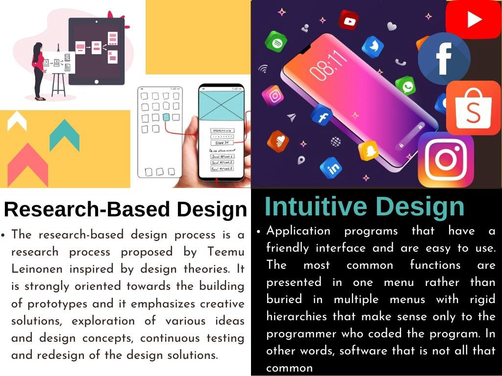

CW1: Design Theories: Product Samples

I created my design for Experiential Design and Mentor-Led Design while my members also created their designs so that we showed our designs to each other if it is good for our classmates to choose or not.
We found out that Bea was chosen for Experiential Design and Mentor-Led Design since our classmates liked her design for I-Sign and iPad Pro 3D but we already decided to choose I-Sign.
I created “Plastic” for the Environment-Inspired Design and “Butterfly” for the Biomimicry Design. The reason why I chose Plastic for Environment-Inspired Design is because of saving animals from plastic in ocean. The reason why I chose Butterfly for Biomimicry Design because of similar wing for frames of eyewear and also others’ designs.
We discussed about Environment-Inspired and Biomimicry regarding our designs. We evaluated our designs before rated for each F.A.M.M.E and gave rate per members. We analyzed why we rated and found two of our designs has highest are
Mobirise page builder - Check this